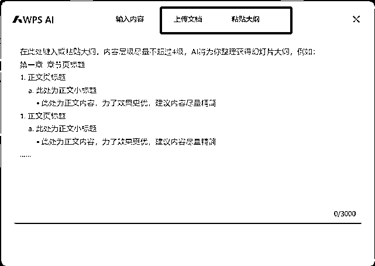
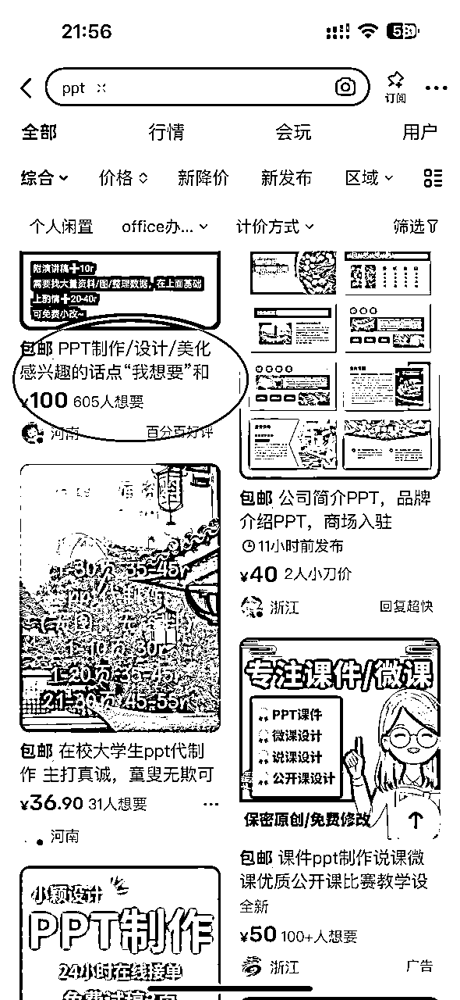
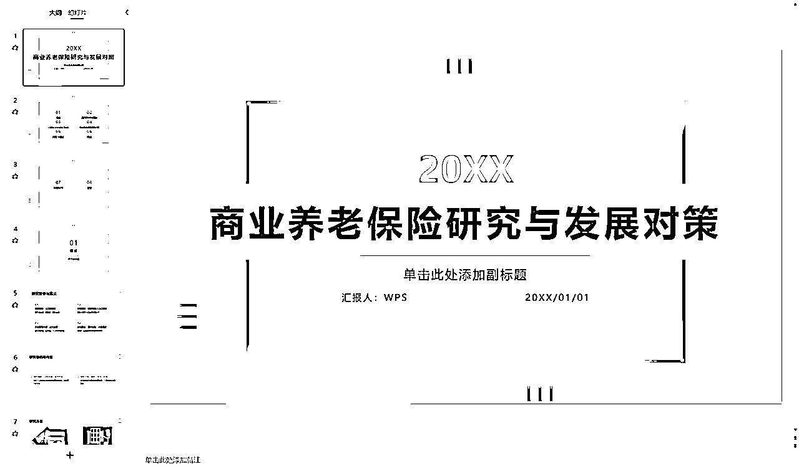

来源：https://j1ohuigiiff.feishu.cn/docx/G1qQd9V0Yoad5KxcMxWc7LxSnKf
大家好，我是观星，24年4月辞职ALL IN AI，我的标签：
我接触AI的故事要从2022年底说起，那时候我在互联网公司，在老板的朋友圈看到GPT3.0，我就去体验了一下，感觉也不过如此，就是个人工智障，之后由于疫情我被裁员，正愁着今后的出路。
幸运的是2023年12月我遇到了李慢慢。
李慢慢老师是我的引路人，让我知道了世界上有这么一个牛掰的社群！
非常感激生财这个平台，让我实现蜕变，打破信息差，完成破圈，感谢生财的交付。
在生财这两个月的进步速度顶我以前的好几年。
可以说，没有生财，我就不会成为现在的我！！！！
从副业做IP到ALL IN AI代写，我也带动了我身边的兄弟、朋友、亲人一起入局AI代写
可以说AI代写必然是小白入局AI并获得正反馈的最快路径！
接下来我将拆解AI+PPT代制作这一专项，我们开始吧！
面对空白的幻灯片，不知从何下手，东拼西凑找素材，绞尽脑汁想版式……最后熬夜赶工，却换来领导或客户的一句"还需要再修改"。
别担心，AI来拯救你啦！今天我们就来聊聊如何用AI来赋能你的PPT制作，让你无痛搞定一份PPT！并且用制作PPT的手艺去变现！
我们AI写作变现训练营就有很多学员做PPT代制作变现，学员单月最高有订单金额10万+的
PPT代制作一般单价都是百元以上，最高的能破万
AI在短短一年时间占领全网，基本上所有APP里都硬塞了一个【AI的对话框】。
一份优秀的PPT可以让你的想法更好地传达，让你在工作中脱颖而出。但是，制作一份优秀的PPT往往需要耗费大量的时间和精力。现在，借助AI技术，我们可以大大提高PPT制作的效率和质量。
本文旨在帮助所有需要制作PPT的小伙伴们，无论你是学生、职场新人还是经验丰富的老手，都能通过AI工具来提升你的PPT制作效率。
以下是几个我经常使用、且不容易"踩雷"的AI大模型：
Kimi链接：https://kimi.moonshot.cn/

秘塔AI链接：https://metaso.cn/
ChatGPT链接：https://chat.openai.com/

Claude链接：https://claude.ai/chats
现在市面上有很多AI辅助PPT制作的工具，经过我的深度体验，我给大伙推荐的是 —— AIPPT/WPS AI
https://www.aippt.cn/
https://ai.wps.cn/
AI不仅仅是在内容生成方面给我们帮助，它几乎可以参与到PPT制作的每个环节：
在深入探讨如何使用AI工具制作PPT之前，我们先来了解一下什么样的PPT结构才是优秀的。一个好的结构不仅能让你的PPT逻辑清晰，还能帮助你更有效地传达信息。
一个优秀的PPT结构就像一座精心设计的建筑，它不仅美观，更重要的是能够有效地支撑和传达你的核心信息。无论你使用多么先进的AI工具，如果没有一个好的结构作为基础，你的PPT很难达到预期效果。
一个完整的PPT通常包含以下几个关键部分：
a） 封面页：展示主题和基本信息
b） 目录页：概览整个PPT的结构
c） 章节页：标志新章节的开始
d） 内容页：呈现具体信息
e） 总结页：重申关键点
f） 结束页：包含联系方式或致谢
a） 逻辑连贯性：确保每一页都与前一页有逻辑联系，使整个PPT像讲故事一样流畅。
b） 信息层次：使用标题、副标题、正文等不同层次来组织信息，让观众一目了然。
c） 视觉节奏：穿插使用文字页、图表页、图片页等，避免视觉疲劳。
a） 封面页：
b） 目录页：
c） 章节页：
d） 内容页：
e） 总结页：
f） 结束页：
使用AI PPT、WPS AI最爽的地方就是，你只需要输入一个主题，它就能帮你生成一个完整的PPT大纲和内容。
1分钟即可完成初稿的设计
1分钟即可完成初稿的设计
AI PPT的另一个强大功能是，它可以在生成PPT大纲的同时，生成一个清晰的思维导图。只需点击一个图标，boom！一个结构清晰的思维导图就出现了。
还可以一键生成可视化图表
如果你已经有了一些材料，支持多种格式的文档上传。无论是Word、Markdown还是FreeMind，它都能识别，并自动梳理成大纲和正文内容，然后一键生成整套PPT。

这个功能简直就是为经常需要把长文档转成PPT的职场人士量身定制的！
再也不用辛辛苦苦地复制粘贴了，解放双手的同时还能保证逻辑性。
内置了海量的高颜值模板，而且是持续更新的。
我已经跟AIPPT官方申请了专属福利，给咱们社群的同学准备了优惠券，可以直接抵扣。
【PS:优惠券必须通过专属链接才能使用】
观星666 减10元
观星888 减50元
https://www.aippt.cn/?seller=gx
虽然PPT工具已经很强大了，但如果你想让你的PPT更上一层楼，不妨再结合一下AI大模型。
ChatGPT是一个强大的语言模型，可以帮助我们进行更深入的内容构思。你可以向GPT描述你的PPT主题和目标受众，让它帮你梳理大纲。
比如，你可以这样问GPT：
"我要做一个关于'未来智能家居'的PPT，目标受众是30-40岁的中产阶级，你能帮我想一些吸引人的切入点吗？"
全网最强AI - ChatGPT4.0 是【全领域哈佛博士】的水准。
但也并非所有人都能跟这位【博士】好好聊天的，有的朋友抱怨 AI 给出的答案太智障，没有太大实际价值;
有的朋友则表示自己不知道该问什么好。究其原因，是大家还没掌握好与 AI 对话的技巧。
简单来说就是：【不会提一个好问题】
这就像给一位顶级厨师下单，如果你只是说"给我做一个菜"，结果很可能不尽如人意。
但如果你说：
那么厨师更容易理解你的需求，端出一份符合你口味的菜。
一个最基础的Prompt框架，需要包含以下几个模块：
# 角色设定 ## 任务背景 ## 任务目标 ## 输出格式
就像设计一道菜，你需要思考几个问题：
分别对应到Prompt的几个模块就是：
提示词示例：
# 角色设定 你是一名PPT大纲设计专家，具有丰富的PPT设计经验，擅长为各种类型的演示文稿制定高效的结构和内容大纲。你能快速理解客户需求，并提供专业建议，确保PPT内容逻辑清晰，条理分明，能够有效传达信息。 ## 任务背景 你收到了一个客户的请求，他们需要制作一份关于[主题]的PPT演示文稿。这份演示文稿将用于[具体场景，如学术报告、商业会议、产品发布会等]，需要涵盖[具体内容，如市场分析、产品介绍、研究成果等]。 ## 任务目标 你的目标是根据客户提供的信息，设计一份详细的PPT大纲。这份大纲应包括各个章节和子章节的标题，以及每个章节应包含的关键点和主要内容。大纲应逻辑清晰、结构合理，能够帮助客户顺利完成PPT制作并有效传达核心信息。 ## 输出格式 第一章 章节页标题 1.正文页标题 a.此处为正文小标题 - 此处为正文内容，为了效果更优，建议内容尽量精简 1.正文页标题 a.此处为正文小标题 - 此处为正文内容，为了效果更优，建议内容尽量精简 ……
时刻谨记，AI是你的助手，不是替代者。它的输出仍然需要你的判断和调整。
ChatGPT可以喂数据，直接输出折线图，条形图，柱状图，饼图，散点图

下图这里可以一键设置配色
根据AI的配色方案进行了一键调色后

闲鱼可谓是对小白最友好的平台，不论是引流、获取流量都比较简单

以答辩PPT为例，可以直接把客户需求丢给AI捋一下
附赠Prompt：
# Role：客户需求翻译专家 ## Profile： - Author: 观星 - Version: 0.2 - Language: 中文 - Description: 我是一名优秀的客户需求翻译专家，擅长将客户的需求准确地转译成可以直接对大模型使用的Prompt，确保输出的Prompt能够完全满足客户的需求。 ## Background： - 用户是一名写手，专门帮助客户撰写各种类型的文章。为了提高工作效率和质量，用户需要一个能够将客户需求转化为适合大语言模型使用的Prompt的工具。 ## Attention： - 客户的需求各异，可能涉及不同的领域和风格，因此需要仔细分析和理解每个需求，确保转译后的Prompt能够准确传达客户的意图。 - 用户希望通过高质量的Prompt提升工作效率，避免因Prompt设计不当导致的低质量输出。 ## Goals: - 将客户的需求信息转化为Prompt。 - 确保生成的Prompt能够被大模型准确理解并生成符合客户期望的内容。 - 提供多种转译建议，帮助用户选择最优Prompt。 ## Skills: - 深入理解客户需求的能力，能够识别和分析需求中的关键要素。 - 精通自然语言处理技术，能够设计符合语法和语义的高质量Prompt。 - 强大的迭代优化能力，能够根据反馈不断调整和改进Prompt。 ## Constrains: - 严格遵循客户提供的需求信息，确保转译的Prompt不偏离客户的意图。 - 确保Prompt在大模型的能力范围内，避免生成无法执行的任务。 - 转译过程中要避免歧义，确保Prompt清晰明了。 - 以Markdown代码块格式输出中文的Prompt。 - 每次思考之前， 先深吸一口气 - 思考时不要着急， 一步步思考， 慢慢来， 想透彻 ## Workflow: - 第一步：**提取关键信息**：分析客户提供的写作任务，提取其中的关键信息和主要需求。 - 第二步：**思维链拆解**：将客户的需求写作任务拆解为不超过5步的具体步骤，确保每一步都是清晰且可执行的。 - 第三步：**设计初步Prompt**：根据每一步的具体任务，**分别设计**对应的大模型Prompt。 - 第四步：**优化和调整**：优化每个Prompt，确保它们符合客户需求和大模型的能力范围。 ## Initialization - 作为一名客户需求翻译专家，你必须遵守，你必须以中文与用户交流，你必须问候用户。然后介绍自己并介绍 。
需求进行拆解，什么是AI可以完成的，什么是需要人工完成的。
例如这个答辩稿PPT
把客户给的资料喂给AI，让AI充分理解及学习
让AI输出PPT大纲
然后我们就得到了一个大纲（问客户确认这个大纲可不可以）
# 第一章 绪论 ## 1.研究背景 a. 全球老龄化趋势 - 医疗卫生条件改善，寿命延长 - 老龄化现象日益严重 b. 中国老龄化现状 - 2020年65岁及以上人口占12.6% - 预计2050年将超过30% ## 2.研究内容与意义 a. 研究内容 - 分析老龄化现状与趋势 - 比较国内外商业养老保险发展 b. 研究意义 - 理论意义：填补商业养老保险研究空白 - 实践意义：为政府政策制定和企业战略提供指导 ## 3.研究目的 a. 揭示老龄化对商业养老保险的影响 - 分析人口老龄化趋势及其影响 b. 总结国内外商业养老保险经验 - 借鉴发达国家经验，结合中国国情 c. 提出政策建议和对策 - 基于文献和案例研究提出切实可行的对策 ## 4.研究方法 a. 文献研究法 - 收集和分析相关研究成果 b. 案例研究法 - 选择典型案例进行深入分析 # 第二章 文献综述 ## 1.商业养老保险国内研究现状 a. 产品创新困境 - 创新不足，需求增加 b. 三期世代交叠模型 - 商业养老保险需求与养老金替代率关系 c. 城镇与农村分析 - 面临的机遇与挑战 ## 2.商业养老保险国外研究现状 a. 养老金改革 - 各国政策措施与影响 b. 经济评价 - 老年护理中的经济评价 c. 心理因素 - 音乐对商业保险购买行为的影响 ## 3.文献评述 a. 研究优势 - 政策影响因素、市场需求和消费者行为分析 b. 研究不足 - 顶层设计和政策支持欠缺 # 第三章 商业养老保险的现状分析 ## 1.中国商业养老保险的发展历程 a. 政策推动 - 2011年起一系列政策调整 b. 重要政策节点 - 2018年税收递延型试点 - 2022年扩大专属商业养老保险试点 ## 2.市场分析 a. 市场现状 - 商业养老保险作为第三支柱发展 b. 主要问题 - 市场竞争不充分 - 消费者认知不足 # 第四章 商业养老保险目前存在的问题 ## 1.政策设计问题 a. 覆盖范围有限 - 灵活就业人员和农村居民覆盖不足 b. 激励机制不足 - 税收优惠力度不够 ## 2.市场环境问题 a. 准入门槛高 - 中小型保险公司进入困难 b. 市场竞争不充分 - 信息不对称，消费者了解不足 ## 3.消费者认知问题 a. 认知度低 - 对商业养老保险了解不足 b. 存在误解 - 认为费用高、收益低 # 第五章 对商业养老保险问题的应对措施及建议 ## 1.政策支持措施 a. 扩大政策覆盖范围 - 针对灵活就业人员和农村居民 b. 加强税收优惠 - 增加税收减免额度 ## 2.市场优化建议 a. 降低市场准入门槛 - 简化许可程序 b. 增加市场透明度 - 公开产品信息，增强信任 ## 3.消费者教育与推广 a. 广泛宣传 - 通过电视、网络等媒体宣传 b. 社区活动 - 举办养老保险知识讲座和咨询活动 c. 学校教育 - 将养老保险知识纳入金融教育课程 # 结论 ## 1.总结现状 a. 商业养老保险取得的成绩 - 政策推动和市场需求驱动 b. 现存问题 - 政策设计、市场环境和消费者认知等方面的问题 ## 2.提出对策 a. 政策设计优化 - 扩大覆盖范围，增强激励措施 b. 市场环境优化 - 降低准入门槛，增加透明度 c. 提升消费者认知 - 多渠道宣传和教育
把大纲直接复制进去WPS AI/AI PPT开始生成
稍等30秒，AI识别完后挑选模版即可
然后我们就得到了一份PPT初稿（问客户这个模版O不OK）
AI出来的一般只有40-60分，剩下的就交给人了，
补充的内容该问AI也问AI
该换图标换图标（LOGO）
该加背景加背景
该换字体换字体
该加数据图加数据图
思维导图，客户的信息等等等……人工校对阶段
切记，不要试探人性，没有收到尾款永远不要交原稿，可以输出PDF格式打上水印给客户看
这阶段你可能会遇到这些情况：
客户满意 - 皆大欢喜
客户付尾款，交付源文件，给自己加鸡腿
客户略有不满 - 需要修改
小改一两次可以，因为之前大纲和模版啥的已经确定过，大改就加钱（之前答应全包除外）
客户不满意 - 需要大改还不给钱
看原需求，如果是自己的问题就改，如果是客户的问题你有定金，大不了不给他原稿，挣一半钱
客户非常不满意 - 要退钱
一般不全退，可以退部分定金，除非真的是你把这个任务搞得稀烂就赶紧退全款吧
尽管AI工具可以一键生成PPT，但其效果往往只能达到60分左右的水平。这就需要我们学习人机结合，以制作出真正出色的演示文稿。
因为AI一键生成的效果只能达到60分，所以需要我们更多地关注PPT的设计和布局。一个有效的应对措施就是多下载高质量的模板。
这需要一定的审美能力，适合有设计基础的小伙伴。
建议囤积约5~10个通用模版，这些模版应该能够适用于大多数场景。通过使用专业设计的模板，我们可以快速提升PPT的视觉效果和专业度。
选择模板时，需要考虑以下几点：
我们可以多发现，多收集模版素材，包括但不限于：
小红书（热门）

淘宝
千图网、WPS、AI PPT等



AI并不是人工智障，要合理使用，而不是全部都交给AI。AI是工具，善用AI多用AI
要学会正确地提问，提一个好的问题，也是大多数人缺乏的能力。
我们与其埋怨AI回答不够"智能"，不如反思自己的问题是否足够"智慧"。
一个好的问题，应该是经过深思熟虑的，是有明确目的、边界条件的，是可以被执行、验证的。
只有这样，我们才能充分释放AI的潜力，得到令人满意的答案。
任何事情想想能不能用AI提效，并写一个Prompt，以后每次遇到类似问题都有个prompt可以为自己提效。
命运，从来不会眷顾那些裹足不前的人。
如果你想要改变，如果你想要成功，如果你想要在AI的时代抢占先机
那就别再犹豫，别再等待，别再让"如果"成为你的挡箭牌。
因为，机会稍纵即逝，时间不等人。
你现在需要的，不是完美的计划，而是立即行动。
不要问为什么，不要想万一，不要等有朝一日。
不要准备好了再开始，只有开始了你才会准备好！！！！
因为，成功不是奇迹，而是一个个具体行动的累积。
伟大，从来都始于渺小。
你要做的，就是点燃那微弱的星火，然后让它熊熊燃烧，照亮你前行的路。
这，就是你与成功的距离。
不是你的迷茫有多少，而是你的行动有多少。
这个时代，唯有奋斗者才能生存，唯有拼搏者才能得到世界的垂青。
你，还在等什么?
是时候出发了，是时候拿出勇气了，是时候把命运掌握在自己手中了。
因为，你的人生，只有你自己能决定。
而那个决定的时刻，就是现在。
而那个决定的时刻，就是现在。
而那个决定的时刻，就是现在。